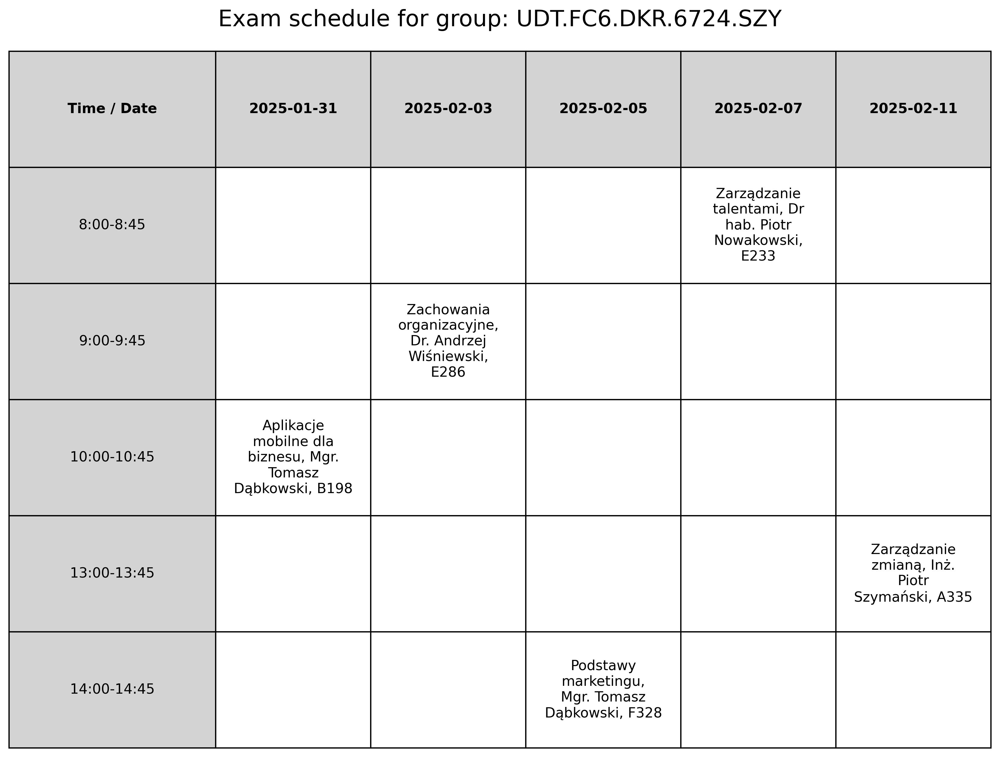

Usage
Installation
Prerequisites
Make sure you have Python 3.8 or higher installed on your system.
Steps
1.Clone the repository:
git clone https://github.com/radosz365/ExamScheduling.git
cd ExamScheduling
2.Create a virtual environment:
- On macOS/Linux:
python3 -m venv venv
source venv/bin/activate
- On Windows:
python -m venv venv
.\venv\Scripts\activate
3.Install the dependencies:
pip install -r requirements.txt
Usage
Default Settings
To run the program with default settings:
python run.py
Custom Settings
1.Add your dataset:
- Place your CSV file containing exam and participant data into the
datasetsfolder.
2.Edit the run.py file:
- Set the dataset file name:
dataset = "your_dataset.csv"
- Configure the start date for exams:
start_date = "YYYY-MM-DD"
- Define custom time slots (optional):
time_slots = [
"8:00-8:45",
"9:00-9:45",
"10:00-10:45",
"11:00-11:45",
"12:00-12:45",
"13:00-13:45",
"14:00-14:45",
"15:00-15:45",
"16:00-16:45",
]
3.Run the program:
python run.py
Output
- Schedule CSV: Saved in the
schedulesfolder. - Visualizations: Saved in the
visualizationsfolder as PNG files.
Demo
To generate a schedule visualization, enter the path to the data file in the run.py file in the file_path variable and enter the group for which you want to generate the visualization in the group_to_display variable.
file_path = "schedules/your_dataset.csv"
group_to_display = "the group you want to save in png format"
An example of a generated schedule visualization: 